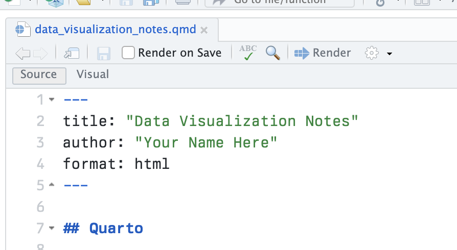
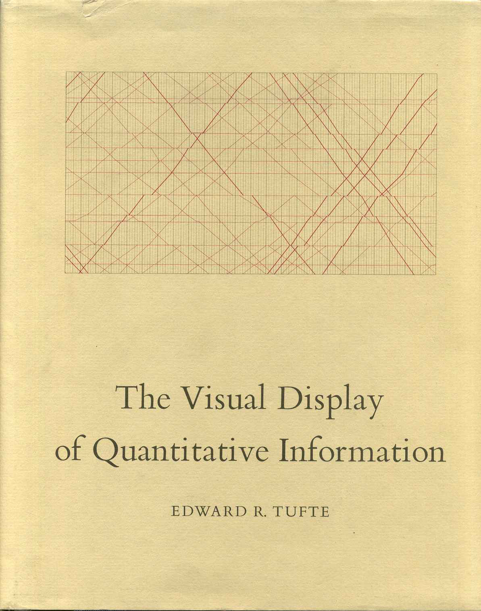
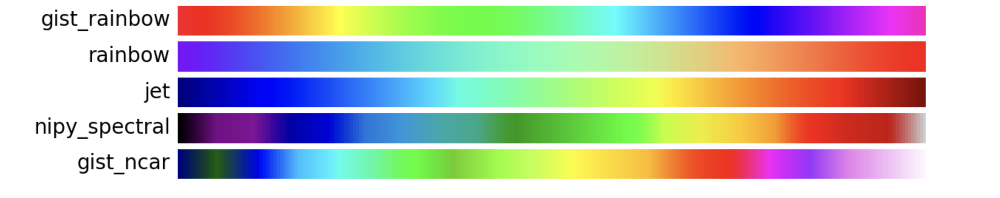
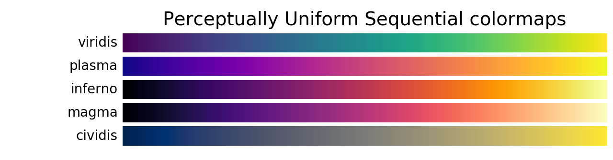

p <- ggplot(data = gapminder,
mapping = aes(x = gdpPercap,
y = lifeExp))
p + geom_point()Data Visualization - 1. Looking at Data (a)
Kieran Healy
Code Horizons
October 2024
Data Visualization
with R and ggplot2
Housekeeping
- 10:00am to 12:30pm US EST
- Break from 12:30:pm to 1:30pm
- 1:30pm to 3:30pm
- Use the Zoom chat to ask questions, or raise a hand with
In between class sessions
My Setup and Yours
- Talking, Slides, and Live-Coding in RStudio
- Follow along and take notes in RStudio yourself
- The course packet is also an RStudio project
Get up and Running
Try rendering your notes
- Don’t worry if it’s not clear what’s happening at this point.
Now write the following code
Write this out inside the “code chunk” in your notes.
… And Render your document again.
Now write the following code
Write this out inside the “code chunk” in your notes.
… And Render your document again.
You should
look at
your data
Seeing things
Anscombe’s Quartet
Desmond, Papachristos & Kirk (2016)
Zoorob (2020)
Zoorob (2020)

Cairo; Matejka & Fitzmaurice
Pew Research
- A. In recent years, the rate of cavities has increased in many countries
- B. In some countries, people brush their teeth more frequently than in other countries
- C. The more sugar people eat, the more likely they are to get cavities
- D. In recent years, the consumption of sugar has increased in many countries
Pew Research
- A. In recent years, the rate of cavities has increased in many countries
- B. In some countries, people brush their teeth more frequently than in other countries
- C. The more sugar people eat, the more likely they are to get cavities
- D. In recent years, the consumption of sugar has increased in many countries
Pew Research
- A. In recent years, the rate of cavities has increased in many countries
- B. In some countries, people brush their teeth more frequently than in other countries
- C. The more sugar people eat, the more likely they are to get cavities
- D. In recent years, the consumption of sugar has increased in many countries
Not Seeing Things
Bad Taste
Bad Data
Bad Perception
Bad Taste: Simplify, Simplify?
Tufte’s “Data to Ink Ratio”

Nigel Holmes
Darkhorse Analytics
Darkhorse Analytics
Bad Data: Junk-Free Junk Charts
New York Times
Erik Voeten
Bad Perception: Seeing and Not Seeing
Edges & Contrasts
Hermann Grid Effect
Fraser Columns
Fraser Diamonds

Mach Bands
Mach Bands
Edward Adelson
Edward Adelson
Luminance and Color
Troxler effect

Lilac Chaser
Colin Ware
Colin Ware


National Weather Service
Achim Zeileis
Achim Zeileis
Achim Zeileis